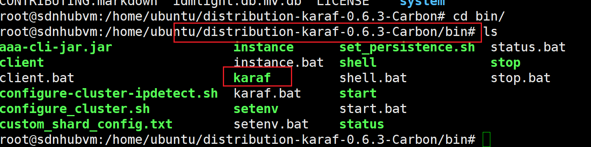

SDN概述
有一说一，我刚听SDN还挺懵的，b站搜视频看了一个小时，勉强看懂，以下是我对SDN技术的理解
学网工的同学或者说有接触过计网的同学，在做实验课的时候应该有这样的体验
以华为的eNSP为例
我想用交换机，我就要拖个交换机到拓扑图，想用路由器就要拖个路由器，这是目前我们的一个“死规矩”
所以在网络设备的选择上，我们并不那么自由
企业也是一样，缺路由器买路由器，缺交换器买交换机，不能买偏了
而这些设备具体的功能，厂商说了算
网工的同学应该体会最深，当我们命令不会查文档时，还得按设备型号去找，华为的文档多到离谱
看着都头大
说的更直观点,以防火墙为例
现在的防火墙硬件设备，每个都是厂商自己设定好的，无论是防护机制或者类型
使用者没有修改的余地
原有网络设备结构
现在的设备，都是讲控制和数据集成到一起的，“我想配置AR1就进AR1,配置AR2就去AR2”，如图
SDN的目的
SDN的目的就是为了解决上述的问题，提高网络的自由度。
让用户像开发网站一样，自定义设备的功能
SDN实现控制平面和数据平面的分离，从上面的图到下图
将原来控制数据集合的模式，独立出数据平面和控制平面，让用户通过编写SDN应用的方式自定义设备的具体功能
方式就是让设备只保留最基础的功能，如路由转发等，然后加上北向API，使设备可以接入编程语言

就像数据库划分了数据层-数据库管理系统-应用层一样
通过划分”设备数据层-设备管理系统(SDN)-具体应用(SDN应用)”的方式，让设备具有了可编程能力
或者说网络设备就是一台win11电脑，SND就好比这台电脑上的C语言环境。
程序员想让这台电脑里运行什么网站或者应用，只需要用C语言去开发就可以
换回SDN,网络管理员想让设备有什么功能，拿起SDN编程就可以
这就是SDN的应用本质
SDN控制器的比较
SDN控制器现在有很多，就像编程语言分C、java、python…. 一样
下图抄自bilibili
核心思想
SDN的三个核心思想，即解耦、抽象、可编程。
解耦
解耦即控制平面与数据平面的分离
抽象
抽象指抽象路由交换的行为，比如转发抽象
使我们可以通过流表控制网络设备
可编程
可编程在解耦的基础上提供具体的接口，使我们可以用编程语言去控制
其中东西向接口还在研发
总述：
上述概括了SDN的核心思想，但事实不同理论，就像OSI参考模型实现终于成了TCP/IP一样，SDN也有形成了不同的发展路线：
首先，采用OpenFlow标准，转控分离、集中控制，主张硬件标准化，控制上移到由软件实现的控制器上，打破原有网络的封闭状态，受到初创公司和学院科研单位的欢迎，可以看作为革命型或狭义SDN。这也是我们主要学习的路线
其次，设备提供商感受到压力，希望在市场继续保持优势，另一方面，运营商即想拥抱新理念，也想保护现有的投资，这样希望针对现有网络进行平滑的过渡，所以采取大多不动设备上的控制智能，控制器(只能说是一种伪控制器)与转发设备间的接口采用NETCONF/SNMP协议，提出更为广泛的SDN架构，可以看作演进型或广义SDN。这是现在普遍被使用的路线
最后，还有一种发展路线，它以现有IP网络为基础设施，在其上建立叠加的逻辑网络，实现网络资源的虚拟化，本质上属于软件定义的虚拟网络。这一思路被称为Overlay方案。
学习路径：
SDN运行原理
四个平面两个接口
四个平面即数据平面，控制平面和应用平面、管理平面

- 数据平面：网络硬件设置
- 控制平面：SDN控制器
- 应用平面：基于SDN的网络应用
数据平面连接控制平面的接口称为南向接口、控制平面和应用平面之间称为北向接口
整个运行的过程是上图的一个完整闭环
流表
SDN以”流表”的形式控制网络设备，由应用平面定义具体的操作，再交由控制器转化为”流表“，最后再设备处理
数据流：行为相同的数据包
南向接口就负责流表的传递，其中使用的协议为OpenFlow
OpenFlow协议的刘表大体分为三部分
即：匹配域、计数器、指令
匹配域包含网络中的数据信息，如IP,端口，VLAN，设备根据匹配域的内容，确定指令作用的位置
指令是具体的操作，在匹配域确定位置后，由指令决定设备行为(如丢弃、转发、更改VLAN、设置优先级、开销等)
指令的具体操作由应用层使用编程语言定义
总结：
SDN运行过程 —— 应用平面定义操作，通过北向接口交由控制器处理，然后控制器交给具体设备，由南向接口中的具体协议转为流表，设备跟据流表更改自身配置
同时这个过程也可以由设备发往应用平面，完成闭环
OpenFlow协议
OpenFlow概述
OpenFlow协议是实现SDN的首选，主流的南向接口之一，用于实现SDN控制器和SDN交换机之间的通信
通信的方式是流表
OpenFlow最初是为了给研究人员提供一个开放的平台，所以鼓励厂商在产品中支持OpenFlow。研究人员就可以在真实网络中验证新网络协议、架构和算法原型
是一个通用转发抽象模型
目前OpenFlow最高版本是1.5，不过业界常用1.0和1.3
OpenFlow协议并不是7层参考模型的标准协议
控制器流表
mininet> dpctl dump-flows
*** s1 ------------------------------------------------------------------------
NXST_FLOW reply (xid=0x4):
cookie=0x0, duration=41.893s, table=0, n_packets=1, n_bytes=42, idle_timeout=60, idle_age=41, priority=65535,arp,in_port=2,vlan_tci=0x0000,dl_src=c6:4b:9d:ba:82:1c,dl_dst=8a:d0:ce:3c:47:1c,arp_spa=10.0.0.2,arp_tpa=10.0.0.1,arp_op=2 actions=output:1
如上是SDN流表的实例，以逗号为分割
in_port
匹配流量进入的端口，比如上图in_port=2，指匹配2号端口进入的数据
actions
表示执行的动作，如图actions=output:1就是说符合匹配条件的数据从1号端口发出
同样，drop就是丢弃，等等，根据具体流表查看，一般位于流表最后
基于OpenFlow协议的交互过程
Hello消息：控制器和SDN交换机通信的第一个报文，用于协商OpenFlow协议的具体版本，交换机和控制器任意一方都可以发起
双方互相发送hello消息，在hello消息头中的version字段以16进制(1.0就是0x01)各自发送支持的协议版本号
收到hello报文后，以双方报文中的较小版本号为基准建立安全通道
如果协商不一致，发送Error消息后断开Featrue_request： OpenFlow协议版本确定后，控制器向交换机发送Featrue_request报文，确定交换机特性（端口数，支持流表数等）
Feartrue_reply: 交接机收到Featrue_request报文后，以Featrue_reply报文回复控制器自已的信息
set_config：控制器收到交换机信息后，下发set_config包，对交换机进行简单的配置
set_config有两个属性，直接贴图
Packet-in: 当交换机收到未知的数据包时，向控制器发送Packet-in消息询问
1、流表没有处理该数据包的能力
2、流表指示的动作就是发送到控制器
Flow-Mod消息
当控制器收到交换机的Packet-in消息需要下发流表时，控制器就会向交换机发送Flow-Mod消息
Flow-Mod消息携带流表下发交换器，可以对流表进行操作
还有其他的消息报文，不过最主要的、贯通整个通信过程的就是上述的消息报文
流表匹配详解
上图是OpenFlow1.0流表结构，取自未来网络
头域
Header Fields 称为头域，用来表示具体的匹配信息，支持OSI模型1到4层的绝大部分数据包类似，一共12个匹配项，称12元组
只要有至少一种被匹配，就可以进行动作
计数器
计数器记录匹配的次数信息，计数器被更新，说明该流表被匹配
动作
动作分为必备动作和可选动作
必备动作只有转发和丢弃
可选动作按具体厂商为准，五花八门
1.3版本流表详解
作为一个较新的技术，OpenFlow协议现在在不断的演进

但目前主流的版本，是1.0和1.3，所以1.3的流表结构也需要学习
1.3的匹配域，从1.0的12元组增长到了39个特征，同时额外增加了三个流表项——优先级：priority; 超时时间——Timeouts； 标识令牌——Cookies
Meter表
以下多摘自参考文章
Meter表是1.3新增的一种表，一共有四个字段
command字段是表示该meter表的操作，是增加、修改或者删除 meter表。
flags字段能够表示的信息很多，一个16位的字节，能够表示：
meter表限速的单位。默认单位是 kb/s
更换成 packet/s 的算法
是否开启burst
是否统计
meter_id 这个字段是meter表的身份id，在交换机中是唯一的。memter_id的定义是从1开始的，最大值是根据交换机能够支持的最大数值而定。
band字段是一个速度band数组。它可以包含多个数量的计量带，并且每一个计量带都可以重复。同一时间只有一个计量带生效，如果数据包的速度超过所有的计量带，那么配置的速度最高的计量带会被使用。
band 中有四个属性
- type: type字段是指高出限速值的数据包的处理方式。主要有丢弃和设置优先丢弃。
- drop:计量带OFPMBT_DROP定义了一个简单的速度限制器，会丢弃掉超过该值的数据包
- remark:OFPMBT_DSCP_REMARK 字段定义了一个简单的DiffServ 策略，当超过定义值的数据包到来时，其ip头部中的丢弃字段DSCP会被标记。这样该ip数据包就会优先被丢弃。（ip数据报字段中服务类型称DS）
- experimenter:该类型应该是被用于创新实验使用的，可以自定义超出定义值的数据包处理方式。
- len: len字段表示的该band的数据包的长度
- rate字段表示可能作用于数据包的值即限速的值。rate字段的单位是kb每秒，除非在flags字段包含了OFPMF_PKTPS，这时rate的单位是 packet/s
- brust_size字段只有在flags字段包含了OFPMC_BURST才会被使用。它主要用于在使用meter表时突发的大量数据包或者字节时。burst的单位是kb，当flags包含OFPMF_PKTPS时，burst的单位为 packet
meter表的限速原理就是通过读取tare字段的值，将速度超过规定值的包直接丢弃，达到限速的效果
例如：
# 定义一个流表，数据从端口1进，端口2出 in_port=1, actions=output:2 # 定义一个meter表，将速度超过10M的包丢弃 meter=1,type=drop,rate=10000 # 修改流表使之使用meter表 in_port=1, actions=meter:1,output:2
Mininet
关于mininet，我的建议是最好肝官方文档，又快又省事
mininet是一个基于Linux的进程虚拟化网络仿真工具
可以仿真主机、交换机、控制器，交换机支持OpenFlow协议
可以用于SDN的配置实验
Mininet安装
虚拟机安装
去官网http://mininet.org/download/直接下载镜像，然后导入vmware使用
Linux本地安装
git clone http://github.com/mininet/mininet.git下载安装包
然后进入util目标执行脚本install.sh
./install.sh -n3V 2.5.0
文件包安装
apt-get install mininet/precise-backports安装
最后使用 mn --test pingall测试是否安装成功
Mininet目录
bin/mn——不必多说，学过Linux都知道。就是执行文件的位置util——放置辅助文件，包括安装脚本、文档辅助生成mininet——mininet的核心代码都在该文件夹内__init__.py文件用于将Python代码导入控制文件clean.py文件提供两个函数：sh(cmd)调用shell来执行cmd，cleanup()用于清理残余进程或临时文件- test子文件夹用于存放测试的例子
custom——放置用户自定义的Python文件，如自定义的拓扑等。examples——含有很多使用案例，包括miniedit可视化
Mininet命令
Mininet命令可以分为三大类，负责构建网络topo的网络构建命令、负责虚拟设备间交互的内部交互命令，和用来交互Linux的其他命令
网络构建命令
创建一个最小化网络无需任何参数，只需执行sudo mn即可，mininet会默认创建一个交换机和两个主机的连通
--topo: 创建一个指定的topo，一共四种形式
single(单一)： 单一拓扑，网络中只有一个交换机，主机可自定义，语法举例：mn --topo=single,5 # 一个交换机连接5个主机linear(线性的)： 线性拓扑,网络中有N个交换机，每个交换机连接M个主机，举例
mn --topo=linear,5,2 # 5个交换机，各连2个主机tree(树): 树形拓扑，交换机主机按定义的广度和深度树形排列
mn --topo=tree,depth=3,fanout=4 # 创建一个树形topo，深度为3，广度为4 # depth 深度 fanout 广度reversed反向拓扑和单一拓扑相同，turse环形拓扑大家都没说我也懒得查
--custom使用脚本文件，用于创建自定义拓扑
一般配合–topo使用
mn --custom topo2.py --topo mytopo # 使用topo2.py文件创建拓扑
# topo2.py 是具体的脚本文件 mytopo是文件中的类名
编写py文件也很简单，看一眼custom目录下自带的 topo-2sw-2host.py自然明白，需要一定python功底
注意，新版本可以随意的写主机交换机前缀，如a1交换机、b2交换机
老版本则不行，交换机前缀必须统一，如s1、s2
所以我们最好交换机统一用s，主机统一用h，控制器用c

--switch：设置要使用的交换机
参数：
lxbr：内核态交换机。
user：用户态交换机。
ovsk：OpenVSwitch交换机，默认使用此值。
ovsbr：OpenVSwitch交换机。
ivs：OpenVSwitch交换机。
交换机分类3类：用户型、内核型和OVS型，其中内核型和OVS型的吞吐量比用户性大很多，因此一般采用后两种。
举例：
mn --switch ovsk
#可以用 --test iperf 测试性能
--controller 设置要使用的控制器
如果没有此参数则使用默认控制器
mn --controller=remote,ip=[contoller ip],port=[contoller port]
# ip 和 port 是要连接的远程控制器和端口
/*
* 有文章写 --controller=remote,--ip=[contoller ip],--port=[contoller port]
* 晃点我半小时死活连不上控制器，吸取教训
*/
如果–ip和–port省略的话，则默认使用本地ip地址，端口默认使用6653或6633端口号。
--mac自动配置交换机的mac地址
让MAC地址易读，即设置交换机的MAC，主机MAC及IP地址从小到大排序，且设置简单唯一，不仅让机器容易获取，也容易让肉眼很容易识别其ID。
mn --topo=linear,2,2 --mac
内部交互命令
sh：执行ovs系统的指令
其他命令
执行sudo mn -c会进行清理配置操作，适合故障后恢复。
执行exit会退出Mininet的cli，同时给出运行时间统计。
py cmd 使用python来执行cmd。
测试Mininet启动后立刻关闭的时间可以用 sudo mn –test none。
自定义mininet命令
mininet是python的开源工具，所以我们可以自定义命令
1、将命令方法写进net.py
自定义第一步是在net.py文件中Mininet类写实现方法
需要很强的python功底

2、在cil.py中注册命令

3、在/bin/mn 中添加命令
添加到相对应的集合即可使用
/bin/mn也可以当作帮助文档使用
4、重新编译Mininet
...../mininet/util/install.sh -n
SDN控制器—— OpenDaylight
总结一下前面的内容
SDN，就是将传统网络的数据平面和控制平面分离
控制平面交给各个控制器，并以类继承的方式发送给Web应用
数据平面和控制平面通过OpenFlow和OVSDB协议完成交互
其中：
OpenFlow协议
模拟真实网络的工具Mininet
SDN使用的交换机OpenSwitch
SDN使用的控制器ryu、Daylight等
就是我们要学习的知识
数据平面知识较为统一，但北向接口缺少标准，因不同的业务应用导致多样化，学习起来比较麻烦
有趣的是，学术界的想法往往和产业界有所背离，在产业界的运营下，南向接口不仅仅局限在OpenFlow,也包括了NETCONF，SNMP协议
最终，实现了如下图所示的SDN体系结构
安装
集成的虚拟机镜像多香，建议直接镜像，头铁自己百度，懒得写
应有尽有
链接：https://pan.baidu.com/s/1m2KKQDj_etLceKS1fPkBlQ?pwd=5jgh
提取码：5jgh
自己拿
OpenDaylight现在已经发行了12个版本，版本以元素周期表命名，比如现在的最新版本就是Mg版
运行karaf启动daylight

OpenDaylight控制器用到的技术
注：OpenDayLight简称ODL
OSGI——开放服务网关协议
OpenDaylight的起点技术，OSGI是一个面向java的动态模型系统
核心部分是一个框架，其中定义了应用程序的生命周期模式和服务注册。
基于OSGI框架定义了大量的OSGI服务：日志、配置管理，HTTP服务（运行Servlet）、XML解析、设备访问、软件包管理、许可管理、用户管理、IO连接、Jini和UPnP等。
Apache Karaf
就好像Tomcat是最常用的javaweb中间件一样，OSGI模型也有中间件，就是Apache Karaf ,从而实现各应用共性的一些功能，并管理应用的部署。
Karaf做到了对OSGI的集成，达到了开箱即用的效果
Karaf内置了一个SSHd server,可以远程访问控制台，这就是我们操作Daylight的方法，http://ip:8181/index.html
YANG模型
先用大白话来说，好比现在的各种申请书，论文。都有模板，只需要改掉关键字就可以使用。
网络也一样，因为现在的设备实在太多了，命令五花八门。为了让我们快速使用，厂商就推出了YANG模型
YANG就好比写作业、申请的模板，通过调用YANG，就可以实现对不同设备的流表下发等操作
以下是概念术语
早在2003年，IETF成立了一个NETCONF工作组，提出一种基于XML的网络配置管理协议用于标准化配置，也就是NETCONF(Network Configuration Protocol)，因为该协议的配置功能非常强大，同时兼顾监控和故障管理，安全验证和访问控制，所以得到业界的一致认可，所以广泛采用netconfig来配置网络。
NETCONF协议分为传输层、RPC层、操作层和内容层。其中，内容层是唯一没有标准化的层，于是一种新的建模语言YANG产生了，它的目标是对NETCONF数据模型、操作进行建模，覆盖NETCONF协议的操作层和内容层
SDN中，设备会发送YANG模型给控制器，控制器根据收到的YANG模型，生成API接口
OpenDaylight控制台界面如下
Topology和Nodes就是对应的网络拓扑和节点信息。
剩下三个都和Yang有关
Yang UI 中有所有Yang模型的UI，可以可视化的去操作
比如可以通过opendaylight-inventory rve 2013-08-19下发流表
Yang Visuallzer和Yangman几乎没什么特别，也是对Yang模型的一些可视化操作
更重点的是api文档，访问http://ip:8181/apidoc/explorer/index.html
通过api文档，开发时才可以找得到接口位置，以及各个Yang接口的详细信息
建立Mininet连接
OpenDaylight于Mininet建立连接的方式和其他控制器相同
首先，在OpenDaylight安装完成后启动Apache Karaf ，运行Carbon/bin目录下的./karaf或者./client -u karaf即可
这两者的不同在于karaf的启动方面(以下皆在Carbon/bin目录中)：
- 前端启动并进入控制台【实例常规模式】:
./karaf - 前端启动但不进入控制台【服务模式】:
./karaf server - 后台启动【后台模式】：
./start - 连接本地\远程控制台执行单个命令：
./client -u karaf -p karaf -a 8101 hostname osgi:shutdown仅连接不需要加后面的命令
我个人喜欢用./start,毕竟只玩控制器不会用到太多karaf
具体关于karaf中间件看这里：参考文章
其次，刚有说到OpenDaylight与其他控制器连接Mininet的方式相同，OpenDaylight开启之后，同样监听6633端口，除非你改了
所以连接的方式就是开启mininet，控制器ip输好，端口6633即可
此时karaf控制台Topolog页面只有一个交换机
这是因为主机还没有进行联通，需要在mininet中pingall一下
至此OpenDaylight控制器和Mininet正式连通
实验
验证openflow1.3协议meter表限速效果
做了再补